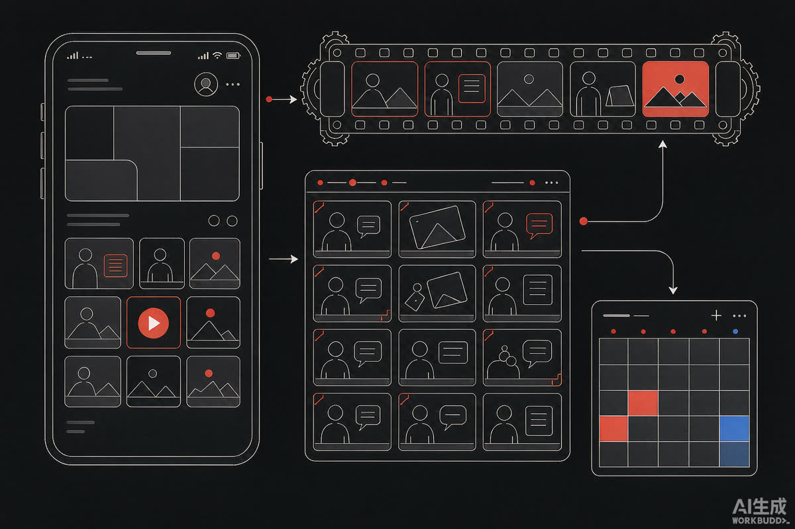
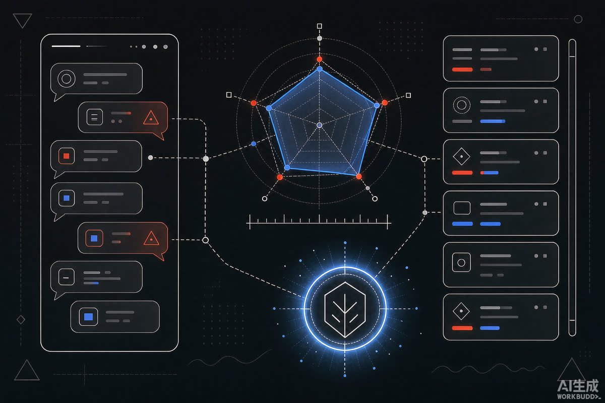

01 / SELECTED WORKS
代表作精选
从公司项目到个人开发，挑四件最能说明「我能做什么」的。

W-01主导 · 从 0 到 1
公司视频号内容体系搭建
从账号定位、内容矩阵到视觉规范全流程独立搭建。55 条视频 = 资讯视频化 35 条 + 「枫筝学堂」培训 20 条 + 节日主题系列，并沉淀 5 篇 SOP 归档飞书。
选题矩阵拍摄剪辑数据复盘SOP
看完整项目档案 →

W-02GEO · 新阵地
GEO 内容基建与 AI 可见度
搭建「提示词库 + 知识库 + 信源内容库」三大基建，对标云途、燕文、递四方完成六维 AI 可见度评估，推动品牌在豆包、DeepSeek 等平台的定位收敛。
提示词库六维评估品牌提及监测
看完整项目档案 →

W-03品牌资产
移动端公司介绍 · 官网 5.0 迭代
参与官网中英文及移动端搭建：素材收集、栏目文案、功能测试与上线验收，内容迭代至 5.0 版，打通百度统计与 Google Analytics 数据追踪。
中英文双站移动端适配数据埋点
看更多作品 →

W-04AI 创作
AI 生图与视频创作
把 AI 生成能力用进真实生产：生图做海报方向稿、图生视频补短视频管线，让「想方向」从半天变半小时——AI 工具深度使用者的日常。
AI 生图图生视频剪映组装
看 AI 创作作品 →